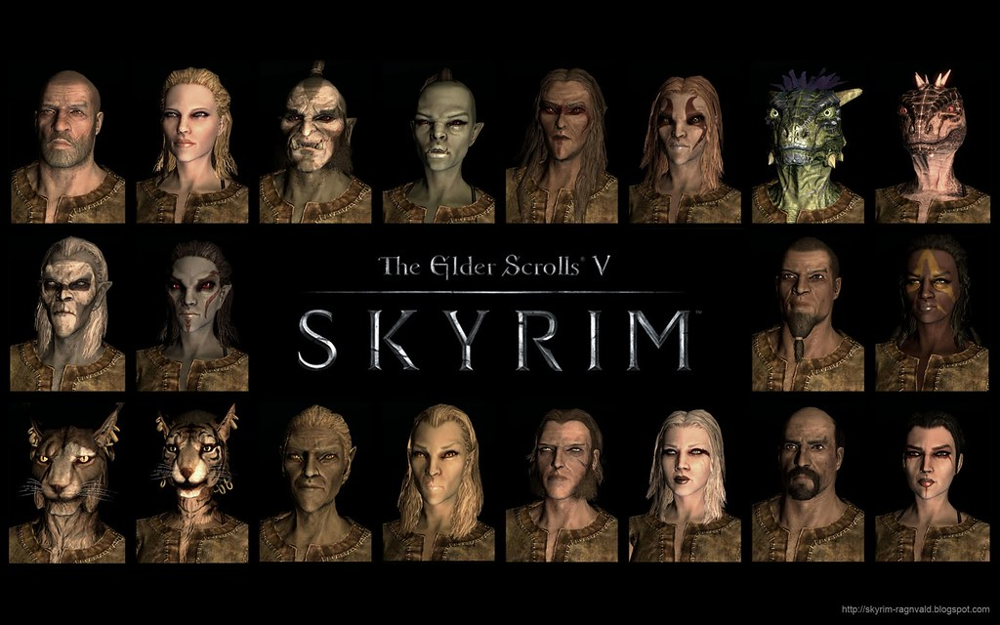

Skyrim Elders Scrolls: V
The Elder Scrolls V: Skyrim is an action role-playing video game developed by Bethesda Game Studios and published by Bethesda Softworks. It is the fifth main installment in The Elder Scrolls series, following The Elder Scrolls IV: Oblivion (2006), and was released worldwide for Microsoft Windows, PlayStation 3, and Xbox 360 on November 11, 2011. The game is set 200 years after the events of Oblivion and takes place in Skyrim, the northernmost province of Tamriel, a continent on the planet Nirn. Its main story focuses on the player's character, the Dragonborn, on their quest to defeat Alduin the World-Eater, a dragon who is prophesied to destroy the world. Over the course of the game, the player completes quests and develops the character by improving skills. The game continues the open world tradition of its predecessors by allowing the player to travel to discovered locations in the game world at any time, and to ignore or postpone the main storyline indefinitely. Skyrim was developed using the Creation Engine, which was rebuilt specifically for the game. The team opted for a unique and more diverse open world than Oblivion's Imperial Province of Cyrodiil, which game director and executive producer Todd Howard considered less interesting by comparison. Upon release, the game received critical acclaim, with praise for its character advancement, world design, visuals, and dual-wielding combat. Criticism targeted the melee combat, dragon battles, and numerous technical issues present at launch. The game shipped over seven million units within the first week of its release and had sold over 20 million units by June 2013. It is considered one of seventh generation console gaming's most significant titles and one of the greatest video games ever made.
Races
In this game you play as the last dragonborn of the world and get to choose a race to be in the game, each with thier own special ability. In Dragon language, "Dovahkiin" is a combination of the words "Dovah," meaning "dragon," and "kiin," meaning "born," or "child" which is typically translated to "Dragonborn," but it can also be translated to "Dragonchild." Dovahkiin also has a second meaning: the "Dov" in "Dovah" refers to Dragonkind as a whole, while the "ah" means "hunter." Interpreted thus, the name reads "Dragonkind Hunter Born," or "Born Hunter of Dragonkind," an appropriate description of what the Dragonborn is destined to do.
All Races
- Argonian
- Khajiit
- Redguard
- Nord
- Breton
- Imperial
- Orsimer
- Bosmer
- Altmer
- Dunmer
Company: Bethesda Softworks
Bethesda Softworks LLC is an American video game publisher based in Rockville, Maryland. The company was founded by Christopher Weaver in 1986 as a division of Media Technology Limited. In 1999, it became a subsidiary of ZeniMax Media. In its first 15 years, it was a video game developer and self-published its titles. In 2001, Bethesda spun off its in-house development team into Bethesda Game Studios, leaving Bethesda Softworks to focus on publishing operations.